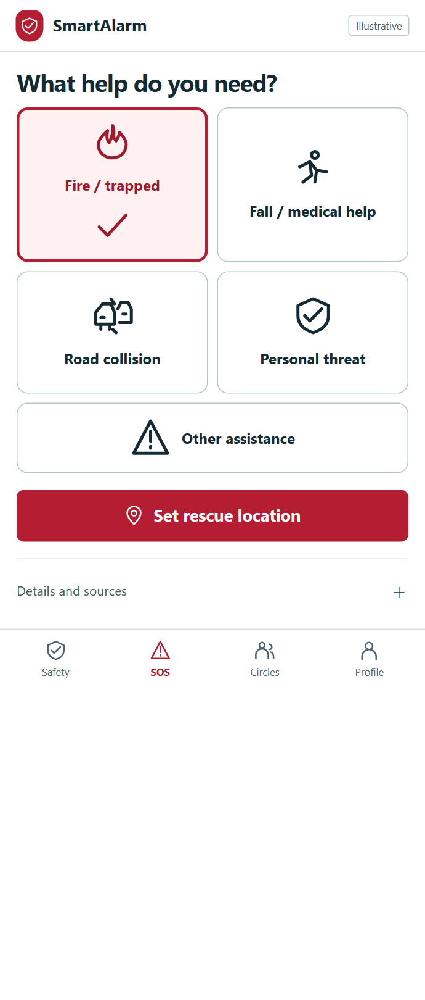
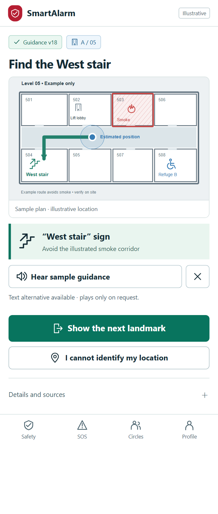
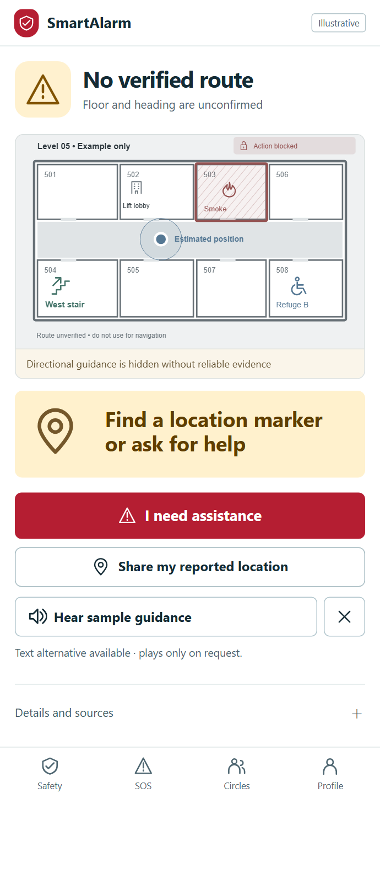
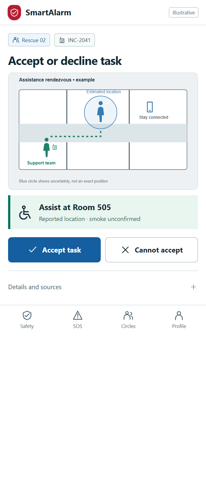
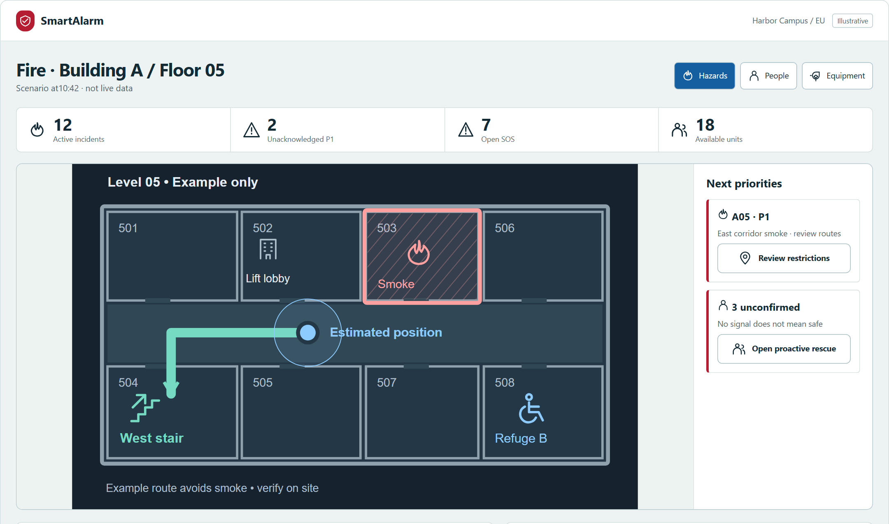
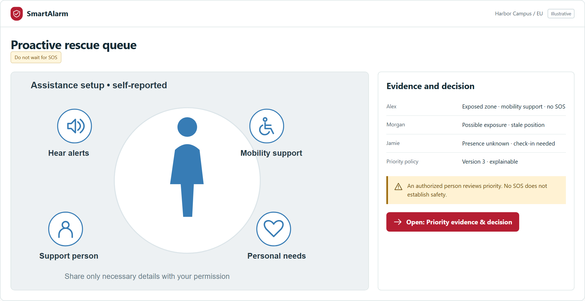
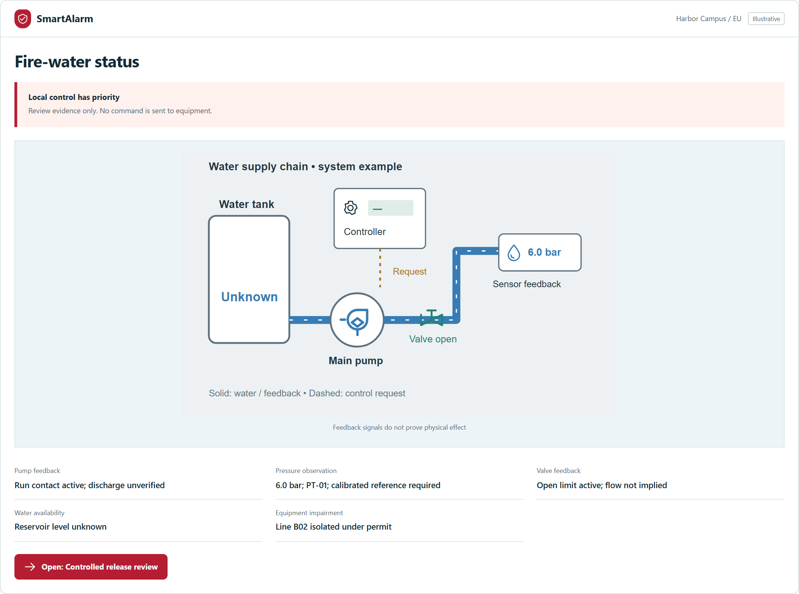

01 · Pictorial assistance
Choose the situation, then confirm location and people.
All 241 screens redesigned around their operational context. Visuals carry the operational information; short labels confirm meaning.

Choose the situation, then confirm location and people.

Map, hazard and stair landmark in one view.

Do not invent a direction. Offer verification or assistance.

A task connects location, capability and assistance needs.

Select hazards, people or equipment. Distinguish known facts from unconfirmed information.


This is a design and interactive prototype with illustrative data. Browser, link and layout checks are recorded separately; human usability studies and site drills remain required acceptance gates.
Read the audit and acceptance method →Region selector with language samples and readable text-size preview
A02Workspace identity beside passkey and SSO entry
A03Verification method and code slots with remaining attempt feedback
A04Organization tiles showing region and effective role before entry
A05Recovery method selector and masked destination receipt
A06Invitation identity, role scope and expiry comparison
A07Separate permission switches with purpose pictograms
A08Device silhouettes with current-session badge and last activity
A09Selected device and revocation impact confirmation
A10Live accessibility preview beside language and motion settings
C01Local hazard summary above family check-in and connection state
C02Hazard pictogram, affected place and one authoritative instruction
C03Floor schematic with current position uncertainty, blocked corridor and accessible refuge
C04Large audio controls paired with synchronized readable transcript
C05Distinct fire, medical, collision and threat pictograms with short labels
C06Location pin with accuracy boundary and manual correction
C07SOS review showing need, location and recipients before sending
C08Receipt ladder distinguishing queued, server-received and human-accepted
C09Incident conversation showing sender role and delivery state per message
C10Existing SOS beside proposed update and cancellation effect
C11Three explicit personal-status choices with sharing precision
C12Personal report and separate delivery receipts for each audience
C13Alert inbox ordered by urgency with source and expiration
C14Nearby hazard map with list equivalent and measured distance uncertainty
C15Advisory boundary and validity band beside source certainty
C16Shelter cards comparing accessibility, current availability and distance
C17Shelter entrance diagram and verified access/capacity status
C18Offline pack contents with version and last synchronization age
C19Circle membership summary with outstanding check-in count
C20Group conversation with member check-in context
C21Circle membership and sharing scope preview
C22Member status board separating reported safe from unknown
C23Contact order with channel pictograms and disclosure preview
C24Wearable connection and fall-check-in escalation sequence
C25Fall check-in with large help and dismiss controls and time remaining
C26Road orientation sketch with manual direction and injury entry
C27Quiet high-contrast assistance controls showing sound and vibration state
C28Personal request history showing open, resolved and pending receipts
C29Privacy scope preview showing live location and export/deletion choices
C30Data request progress and verified delivery destination
R01Unit readiness checklist with capability and shift status
R02Assignment queue ranked by urgency and acceptance deadline
R03Task identity, person location and hazard summary above accept/decline
R04Destination and approach map showing route validity and arrival action
R05Field floor map with blocked zones, open SOS and teammate locations
R06Person-centered observation form with condition and assistance actions
R07Task handover timeline showing receiver acceptance separately
R08Completion evidence and receiving team acknowledgment
R09Team channel with command identity and pending message markers
R10Evidence preview with incident binding and privacy redaction
R11Outbox grouped by queued, retryable and conflicting items
R12Local observation beside server change with preserve-note option
O01Priority incident strip, capacity board and site situation map
O02Multi-incident geographic map with event freshness by layer
O03Signal evidence queue showing duplicate suspicion and source quality
O04Incident map beside open SOS, unconfirmed people and action ownership
O05Evidence frame with observed time, confidence and mapped location
O06Incident creation preview linking category, severity and owner
O07Side-by-side incident lineage with merge/split impact
O08Unit lanes showing capabilities, tasks and acceptance state
O09Assignment preview binding exact unit, task and response deadline
O10Chronological response milestones with source-specific receipts
O11People board separating unconfirmed, assisted and self-reported safe
O12Assistance need, consent scope and last-known location
O13Warning composer beside affected-area and instruction preview
O14Audience footprint and channel/language coverage comparison
O15Exact warning version and author/approver separation
O16Delivery funnel separating provider receipt and human acknowledgment
O17Failed-recipient cohort beside fallback-channel proposal
O18Equipment target schematic with interlocks and expiring command digest
O19Command timeline separating transport receipt and physical effect
O20Closure blockers highlighting open SOS and unresolved people
O21Response interval chart with delivery gaps and improvement owners
O22Improvement task with accountable owner and due-date progress
O23Drill scenario schedule clearly separated from live environment
O24Drill progress board with explicit actuator isolation state
O25Outgoing/incoming responsibility transfer with unresolved actions
O26Shelter capacity board including unknown and expired reports
O27Shelter status editor beside capacity and validity preview
O28Regional advisory queue with source identity and supersession
O29CAP message lineage with update/cancel references and expiry
O30Audit timeline with actor, scope and immutable event details
S01Site map and directory with region boundary
S02Building-floor-zone tree with selected spatial context
S03Parent-location path beside coordinate and floor preview
S04Plan canvas showing exits, refuges and revision differences
S05Plan revision comparison with published/draft state
S06Device inventory grouped by physical function and health
S07Device diagram with heartbeat, certificate and firmware evidence
S08Enrollment sequence tying serial, site and capability claim
S09Permission-gated camera tiles with timestamp and missing-feed state
S10Maintenance window alongside backup-coverage map
S11Versioned rule list showing hazard family and enabled scope
S12Condition-action flow beside simulation-only indicator
S13Test-case outcome grid with false-merge evidence
S14Model quality trend with sample provenance and drift
I01Connector catalog grouped by event, advisory and control capability
I02Connector setup flow with endpoint-region-capability preview
I03Source-to-target field mapping with units and unknown-field lane
I04Contract-test matrix separating accepted and rejected fixtures
I05Connector health lanes showing lag, failure and data age
I06Dead-letter payload diff and replay eligibility
I07API scope grid with masked credentials and expiry
I08Webhook route diagram showing signature and retry policy
I09Partner disclosure boundary with retention and approval state
I10Exchange timeline with payload scope and receipt identity
I11Fleet readiness cards showing battery, availability and pilot control
I12Mission geofence with pilot, weather and authority checklist
I13Preflight gate showing lost-link plan and explicit pilot approval
I14Telemetry strip with stale-data warning and local-control ownership
I15Mission evidence timeline with flight log and accountable pilot
T01Tenant health summary with region and capacity allocation
T02Organization region boundary beside locale and timezone controls
T03Membership roster with invitation lifecycle and role badges
T04Permission-by-site matrix with explicit denied capabilities
T05Escalation ladder with timed owner changes and calendar coverage
T06Multilingual message preview with variable and fallback status
T07Hazard taxonomy tree connected to draft playbook steps
T08Versioned playbook step sequence and timeout responsibilities
T09Retention timeline with legal-hold overrides
T10Data export preview showing identity proof and evidence exclusions
T11Immutable audit event linking actor, object and trace
T12Dependency-health topology with recovery readiness
T13Recovery checklist with verified completion evidence per step
T14Capacity consumption chart with emergency reservation
T15Queue policy comparison showing P1 reserves and hard-limit effects
T16Distribution chart separating median, P95 and missing receipts
T17Report schedule preview with timezone and recipient disclosure
X01Locally saved SOS receipt with server-receipt absence prominent
X02Manual location entry beside unavailable-permission explanation
X03Empty incident view with coverage and unknown-device evidence
X04Workspace selection recovery without disclosing denied object
X05Service outage panel with cached-content age and alternate path
X06Local/server version comparison preserving unsaved edits
X07Search query and active filters beside reset control
X08Session-expired panel explaining protected draft recovery
X09Stale-data band showing source age and unavailable commands
X10Rejected attachment preview with reason and allowed replacement
G01Regional cell topology with residency boundaries
G02Cell replication and writer-epoch status
G03Recovery drill timeline with target RPO/RTO and evidence
G04Recovery proof grid separating fencing and record durability
G05Tenant provisioning dependency plan and isolation boundary
G06Tenant lifecycle state diagram with migration/deletion gates
G07Support request showing minimal scope and access expiry
G08Support authorization comparing requester and approved scope
G09Release compatibility matrix across schema and mobile versions
G10Release gate checklist with rollback viability and SLO trend
G11Security signal queue with affected trust boundary
G12Containment timeline showing residual exposure and evidence
D01Developer resource map separating sandbox and production
D02Request/response split pane with scope and idempotency preview
D03Sandbox response showing HTTP, durable receipt and trace separately
D04Schema version tree with compatibility and deprecation markers
D05Connector capability manifest with validation diff
D06Conformance scenario matrix with security and backpressure results
D07Webhook retry timeline with exact delivery outcome
D08Credential overlap timeline with secret-free rotation preview
L01Language coverage grid highlighting critical missing content
L02Source/translation paired editor with protected variables
L03Version-parity review showing text, variables and voice transcript
L04Pronunciation samples paired with exact transcript and fallback
L05Locale fallback tree showing missing-critical-content behavior
L06Emergency term comparison distinguishing safe, unknown and SOS
C31Circle roster with invitation state and sharing privileges
C32Invitation preview with recipient, role and location access
C33Conversation report scope and block effect on safety warnings
C34Separate social, safety and discreet notification preferences
O31Closed-incident archive preserving original chronology
O32Reopening preview showing new owner and retained evidence
O33Partner exchange preview showing disclosed fields and authority
O34Accessibility queue matching functional needs to capable units
C35Next landmark instruction above floor route and position-quality band
C36Single navigation step with landmark picture and heading-confidence label
C37Withdrawn old route beside approved replacement and change reason
C38Unknown floor/heading panel with manual location and assistance controls
C39Outdoor hazard boundary, destination and unknown road segments
C40Voice sample, rate control and discreet-mode preview
P01Speaker coverage map with uncovered zones and incident context
P02Announcement text/audio preview tied to zones and expiry
P03Exact message version with selected speakers and language sequence
P04Playback progress distinguishing controller receipt from audibility
P05Speaker power-network-amplifier chain with self-test age
P06Live microphone session with selected zones and explicit stop control
P07Mobile speaker mission footprint with pilot ownership
P08Language audio library with pronunciation review and transcript
P09Priority arbitration stack showing local priority and lost-link behavior
S15Evacuation graph with node/edge types and inaccessible links
S16Scenario comparison showing blocked, unknown and wheelchair routes
O35Hazard polygon editor with affected route segments and expiry
O36Guidance version distribution separating withdrawal and delivery receipts
H01Functional assistance profile with mobility and communication pictograms
H02Separate functional-needs and medical-note disclosure previews
H03Caregiver relationship graph with pending and expired authority
H04Subject-caregiver scope comparison with authorization expiry
H05Dependent profile with device link and review-age indicator
H06Profile version diff identifying source and review responsibility
H07Assistance registry with role-limited functional-needs columns
H08Proactive rescue queue with explainable priority reasons
H09Exposure and self-evacuation evidence beside human priority decision
H10Presence evidence matrix separating observed, expected and unknown
H11Restricted medical record with access purpose and disclosure log
H12Welfare observation with contact outcome and next responsible actor
Q01Position-source coverage and health comparison by GNSS/BLE/UWB/QR
Q02Location history with floor confidence and conflicting-source markers
Q03Calibration reference geometry with residual-error preview
Q04Candidate-route comparison with excluded options and constraints
Q05Route trade-off matrix showing uncertainty and human approval
Q06Evidence-linked AI summary with cutoff and authority boundary
Q07Claim-evidence-unknown comparison before human decision
Q08Evaluation results for grounding, injection and data exposure
Q09Model/prompt version deployment preview with regional fallback
Q10Simulated crowd and blocked-exit scenario with mobility cohorts
F01Physical-system topology showing controller authority and evidence age
F02Controller inventory with model, protocol and verified capability
F03Allowed/forbidden operation matrix beside local override status
F04Signal-address-to-meaning mapping with polarity and quality states
F05Physical/source zone overlay showing coordinate and coverage mismatch
F06Cause-to-effect graph with authority and inhibit gates
F07Physical event provenance card linking observed evidence and incident
F08Water-system schematic separating pump, pressure and valve feedback
F09Release-prerequisite gate against exact equipment and expiring request
F10Immutable command digest with requester/approver and execution boundary
F11Receipt-versus-physical-feedback timeline with unknown outcome
F12Unknown-result reconciliation comparing readback and field evidence
F13Local-control handover showing remote lease and receiving operator
F14Impairment map with compensating measures, permit and expiry
F15Commissioning sequence with test isolation and witness checkpoints
F16Expected/observed physical-effect comparison with fault injections
F17Certificate scope mapped to installed bill of materials and limitations
F18Restoration checklist with residual impairment and approval evidence
F19Rescue-equipment mission envelope with qualified operator and limits
F20Vendor connector onboarding gates for credentials, import and activation
BMS01BMS → edge → SmartAlarm chain; capability matrix beside the identity dossier.
BMS02Native point → equipment → served zone → route edge topology with a separate mapping/evidence table.
BMS03Native condition and incident comparison with separate receive/link/native-ACK/response-closure timeline states.
BMS04Priority ladder and winning authority, with separate demand/controller-report/physical-feedback blocks and prominent local override.
BMS05Side-by-side before/after diff highlights unit/type changes, with dependent rules and routes below.
BMS06Zone-quality heatmap with stale hatching, alarm/telemetry/history queues and request-budget calculation.
BMS07Old edge → journal/cursor → standby edge recovery lane, with separate evidence checklist and writer lock.
BMS08Panel → BMS → SmartAlarm → writeback causation path; the echo leg has its own shape/label while raw receipts are retained.